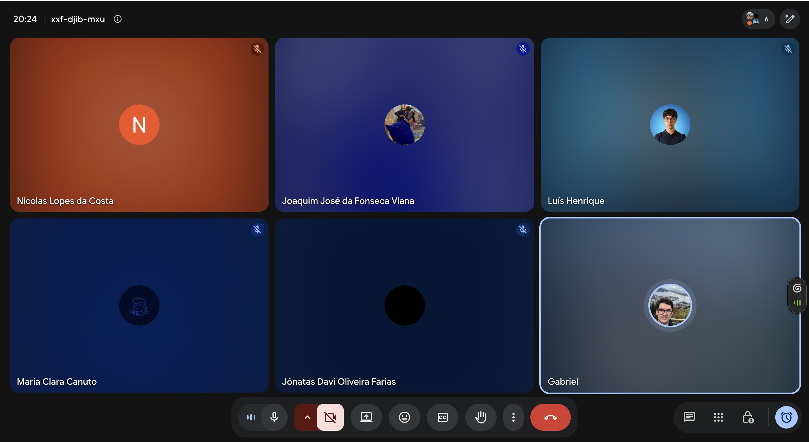

Reuniões da Unidade 2
Esta página reúne os registros das reuniões realizadas durante a Unidade 2 para elicitação, análise, priorização, validação e acompanhamento dos requisitos do projeto Clínica Escola FBr.
Reunião de divisão de tarefas e requisitos (FDD) até 22/09
Data: 17/09/2026 Local: Reunião on-line (Google Meet) Participantes: Gabriel da Cunha Barbaceli; Joaquim José da Fonseca Viana; Jônatas Davi Oliveira Farias; Luís Henrique; Maria Clara Canuto; Nicolas Lopes da Costa.

Figura 4 — Registro da reunião de divisão de tarefas e requisitos (FDD), realizada em 17/09/2026.
Resumo
A reunião teve como objetivo distribuir as tarefas da equipe, priorizar as correções das issues abertas pelo professor e alinhar o levantamento de requisitos conforme o processo FDD, visando à entrega de 22/09.
1. Entregas prioritárias até 22/09
- Corrigir o grupo 1 de issues abertas pelo professor, considerado o conjunto mais urgente; as demais ficam para depois do dia 24.
- Executar em paralelo o levantamento de requisitos da atividade com entrega até 22/09.
- Concluir os materiais preferencialmente até 21/09, permitindo consolidação e revisão antes da entrega.
2. Divisão das issues prioritárias
- Nicolas: solução proposta.
- Gabriel: cronograma e entregas.
- Luís: processo de engenharia de requisitos.
- Jônatas: intervenção social.
- Maria Clara: cenário atual.
As issues estão no GitHub. Os integrantes podem ser atribuídos como responsáveis, mas não devem fechar as issues; após os PRs e a entrada na main, o monitor deve ser avisado para realizar o fechamento.
3. Divisão das características de produto
- Jônatas: CP1 — inscrição on-line; CP3 — fila de espera e consulta de posição.
- Maria Clara: CP5 — distribuição dos casos entre supervisores e estagiários; CP9 — emissão de declaração de comparecimento.
- Luís: CP2 — triagem e classificação de prioridade; CP6 — prontuário eletrônico, evolução e relatório final.
- Joaquim: CP11 — segurança, sigilo e controle de acesso; CP8 — registro da contribuição social.
- Nicolas: CP4 — agendamento, confirmação e remarcação; CP7 — controle de assiduidade e alertas.
- Gabriel: CP12 — acessibilidade e usabilidade; CP10 — indicadores e relatórios institucionais.
O levantamento deve seguir o processo de FDD, incluindo features e áreas correspondentes, e não apenas a separação entre requisitos funcionais e não funcionais. A página "Estudos de FDD", na Unidade 1, foi indicada como referência.
4. Apoio e acompanhamento
- A equipe deve se apoiar mutuamente nas dúvidas sobre as características e o trabalho de cada integrante.
- Joaquim poderá apoiar dúvidas relacionadas às características de produto que ele elaborou.
- Foi sugerida uma reunião semanal com o monitor, possivelmente às quintas-feiras à noite, conforme a disponibilidade dele.
- Gabriel ficou de cobrar o monitor sobre o fechamento de uma issue relacionada ao vídeo da apresentação e verificar sua disponibilidade para acompanhamento semanal.
5. Próximas reuniões e abordagem
- Para a semana a partir de 24/09, considerar reuniões com o pessoal da faculdade para avaliar o valor de negócio e validar o MVP.
- Como foi escolhida uma abordagem ágil, foi discutida a necessidade de contato frequente com o cliente, com sugestão de reuniões pelo menos a cada 15 dias.
- Os contatos com o cliente devem permitir ajustes e alinhamento com a abordagem adotada e com o processo FDD.
6. Organização e documentação
- A divisão de tarefas foi disponibilizada no grupo (WhatsApp) para consulta.
- A reunião foi registrada e a ata incluída na documentação do projeto.
- Foi sugerida a criação de um documento para facilitar o entendimento do ciclo e dos processos; antes disso, foi indicada a consulta à página "Estudos de FDD" da Unidade 1.
Encerramento
A reunião definiu a divisão das tarefas para a entrega de 22/09, priorizando as issues mais urgentes e o levantamento de requisitos conforme o FDD. A equipe buscará consolidar os materiais até 21/09 para revisão e alinhar o acompanhamento com o monitor e as próximas reuniões.